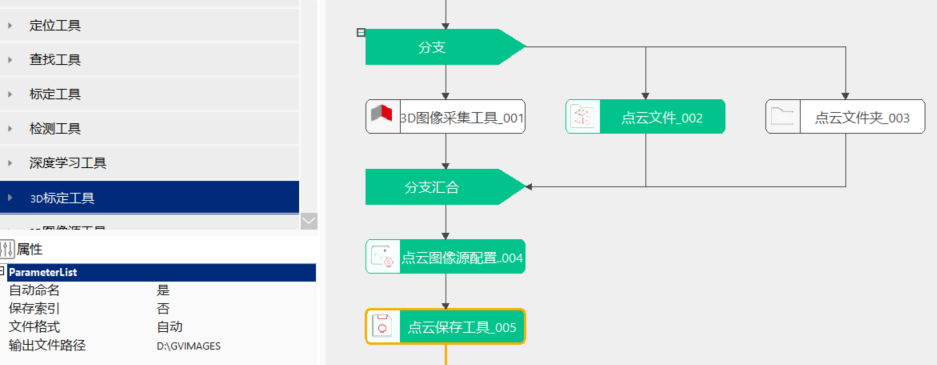

点云保存工具主要是保存点云格式的图像。
在3D测量及检测项目中，经常涉及将采集的点云图像（索引）保存下来，以便后续复测需要，因此需要涉及点云保存的问题。

无
| 参数名称 | 参数描述 |
|---|---|
| 输入点云数据 | 用于保存的点云图像 |
| 文件名 | 当属性窗口中的“自动命名”选择为“否”时，会出现此链接。此处链接提前拟好的命名，可以为单独文件名（如cloud）或带文件夹路径的文件名（如20230302\\cloud） |
| 输入索引 | 输入要保存的点云索引号码 |
| 参数名称 | 参数描述 |
|---|---|
| 自动命名 | 否：需要在数据链接中链接“文件名”，是：系统自定义命名，系统命名规则：工具名+时间+8位ID，如点云保存工具_005_20230302104136644_f2eab9c4.ply |
| 保存索引 | 是：需要在数据链接中链接“输入索引”，文件名与点云保存的文件名一致，后缀为index，将索引保存下来；否：不保存索引 |
| 文件格式 | 选择点云图像的保存格式。分为自动、PLY、TXT三种 |
| 输出文件路径 | 点云图像的保存地址 |
| 参数名称 | 参数描述 |
|---|---|
| 执行结果 | 工具执行结果 |
| 执行时间 | 工具执行时间 |
参见“\Samples\3D\点云\点云图像源配置工具.gvp”。